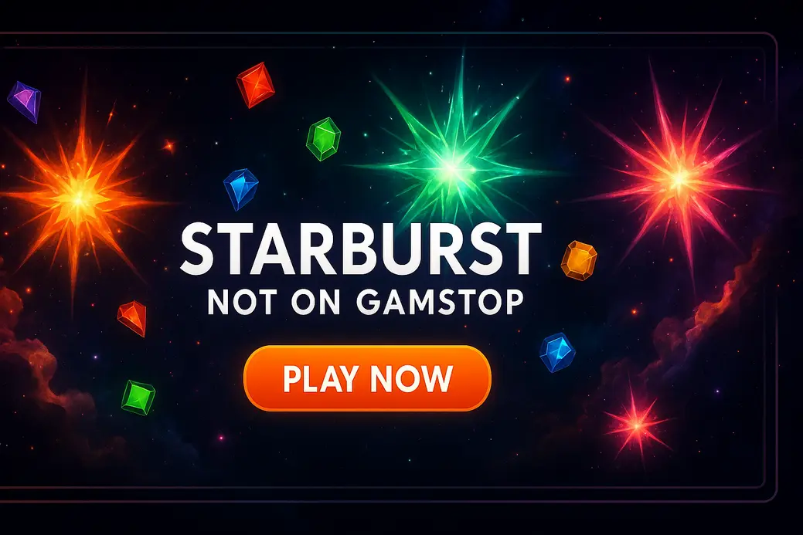

Starburst not on Gamstop

Last Updated: 7 October 2026 | Verified by iGaming experts
Starburst not on GamStop is one of those searches that says a lot without saying much. You want the neon NetEnt classic, fast loading, proper reels, and fewer nanny-state speed bumps. Fair enough. The short version: Starburst is still a cracking low-to-medium volatility slot, but choosing where to play it matters more than the slot itself.
Where to Find Starburst Not on GamStop
- Simple lobby search
- Crypto options listed clearly
- Wagering needs checking
- Search bar actually works
- Bitcoin withdrawals can be quick
- Busy lobby takes learning
- Good provider mix
- Debit card and crypto routes
- Bonus terms feel dense
- Mobile pages load cleanly
- Useful filters by provider
- KYC can slow cashouts
- Wide NetEnt-style selection
- Clear cashier area
- Promos need careful reading
To find Starburst not on GamStop, start with casinos that list recognised slot studios, then use the lobby search before signing up. Honestly, this saves loads of faff. Type “Starburst”, “NetEnt”, and even “Star” into the search bar. A decent casino returns the game instantly, not a messy pile of random fruit machines.
The classic Starburst slot comes from NetEnt and is famous for its expanding wilds, both-ways paylines and simple 5-reel layout. The standard RTP most players look for is 96.09%, with low-to-medium volatility. That means more frequent small hits, not massive dead stretches like you get on Book of Dead. The trade-off is obvious: Starburst rarely gives you a monster screen. It entertains, it sparkles, then it can nick your balance with pretty little nothing spins if you chase.
- Search for Starburst before depositing if the lobby is visible.
- Check the provider name. NetEnt is the original classic.
- Read max bet rules if using a bonus. £5 max bonus bets are common.
- Confirm payments: 💳 Debit Card, ₿ Bitcoin, ₮ USDT, 🏦 Bank Transfer, 📱 Apple Pay where supported.
One more thing, by the way: if a site promotes starburst megaways not on gamstop, inspect it properly. The official Starburst everybody knows is not a Big Time Gaming Megaways title. Some casinos use “Megaways” as a loose category label or push Starburst XXXtreme beside Megaways games. That’s not a disaster, but don’t let sloppy wording sell you a different slot.
The Rush of Casinos Without GamStop
Casinos without GamStop appeal because they feel less boxed-in. Registration is often quick, crypto banking is common, and the lobbies can be huge. You get Starburst, Gonzo’s Quest, Big Bass Bonanza, Sweet Bonanza, Gates of Olympus, live blackjack, crash games, the lot. It’s a sweet shop. Also, sweet shops are dangerous when you’re hungry.
The big difference for UK players is regulatory. Non-GamStop casinos are not part of the UK self-exclusion network and are not licensed by the UK Gambling Commission. That gives more flexibility, but it removes protections many players rely on. If you have self-excluded, do not use offshore sites to dodge that block. That’s not freedom; that’s your brain pulling a fast one.
- Fast sign-up and fewer friction points.
- Crypto withdrawals can land quickly; a Bitcoin withdrawal landed in 6 hours on a smooth cashier day.
- Large slot libraries with NetEnt-style classics and newer high-volatility games.
- Dispute routes are weaker than UKGC casinos.
- Bonus wagering can be damn sticky.
- Responsible gambling tools vary site by site.
Starburst suits these casinos because it loads fast and doesn’t need a manual. On mobile, the spin button is a menace in the best and worst way: big, bright, thumb-friendly, and far too easy to tap again after a near miss. Set a limit before that neon jewel wheel hypnotises you.
Benefits of Choosing Non-GamStop Gaming Websites
The main benefit is choice. Many casinos not on GamStop with Starburst also carry titles from Pragmatic Play, Play’n GO, Hacksaw Gaming, Nolimit City and Evolution. You can jump from Starburst to Gonzo’s Quest, then into Lightning Roulette, without switching accounts. The weakness is that bigger choice makes messy sessions easier. Ten tabs open, five half-used bonuses, and suddenly your balance has done a disappearing act. Bollocks, but common.
Look for NetEnt, Pragmatic Play and Play’n GO filters. If filters are missing, the lobby will feel like a junk drawer.
Crypto is handy for speed, but coin price swings are real. A win can shrink before it reaches your wallet.
More offers sounds lush, yet 40x wagering on bonus plus deposit is a grind on low-volatility slots.
For Starburst, bonuses are a mixed bag. The slot’s frequent small wins help wagering feel active, but its modest top-end means clearing big requirements can drag. Starburst XXXtreme, by contrast, has a higher-risk feel and an RTP often listed at 96.26%, but the volatility hits harder. Fun, yes. Gentle, no.
Must-Try Non-GamStop Casinos for Starburst Enthusiasts
The best place to play starburst without GamStop is the site that combines a clean lobby, fair terms, and payment routes that fit you. DonBet, MyStake, GoldenBet, VeloBet and Rolletto are all worth checking because they lean into large casino catalogues rather than treating slots as an afterthought.
DonBet has a straightforward casino layout and doesn’t bury the slots behind sports menus. The downside is bonus reading: some offers look better on the banner than in the terms. MyStake is strong for sheer volume, and the search bar actually works, which sounds basic until you’ve used a dreadful one. Its weakness is clutter; new players can get lost in side menus and promo tabs.
GoldenBet feels more balanced between casino and sportsbook, so it suits players who also bet on football. The trade-off is that pure slot hunters may need an extra click or two to reach provider filters. VeloBet is tidy on mobile, with crisp menus and quick game launches, but cashout checks can slow withdrawals if documents aren’t ready. Rolletto brings a massive casino catalogue, yet the size is also the problem; use favourites or you’ll scroll for ages.
- Gonzo’s Quest by NetEnt: 95.97% RTP, medium-high volatility, brilliant avalanche feel; dry runs can feel brutal.
- Big Bass Bonanza by Pragmatic Play: 96.71% RTP, medium-high volatility, fun collect feature; bonus rounds can pay peanuts.
- Book of Dead by Play’n GO: 96.21% RTP, high volatility, huge win potential; long cold patches are part of the deal.
If your real search is starburst slots not on gamstop, prioritise sites with demo play or visible game info. A casino that shows RTP, provider and volatility earns more trust than one screaming “WIN BIG” like a market stall. Still, no slot owes you a win. Starburst especially loves to give you £1.20 back from a £1 spin and make it feel like a victory parade.
Navigating Your Adventure: Tips for Choosing the Right Site
Choosing a non-GamStop casino is less about shiny banners and more about boring checks. Boring keeps money safe. Start with licensing details, cashier rules, withdrawal limits, bonus terms, and the actual Starburst listing. If the site hides its terms behind tiny footer text, that’s a red flag waving in your face.
For the starburst slot not on gamstop, look at how the game behaves on mobile. Does it open in one tap? Does landscape mode fit the reels properly? Does the balance update instantly after a win? These little things matter. On a weak site, you’ll see lag after turbo spins or a frozen loading wheel after switching from Wi-Fi to 4G. That kills the mood fast.
- Playing Starburst with a huge bonus attached: low-to-medium volatility keeps it ticking, but 40x wagering still takes serious bankroll.
- Ignoring max cashout rules: some bonus wins get capped, which is painful after a lucky wild-reel run.
- Chasing the expanding wild: the tease is gorgeous, but it does not mean the next spin is “due”. That’s gambler’s bollocks.
A sensible Starburst session is simple. Pick a stake that gives at least 100 spins. If your balance is £50, 20p or 40p spins make more sense than £2 hero taps. Stop after a clear win target or a fixed loss. Sounds dull, works better. Starburst moves quickly, and those tiny gaps between spins are where discipline disappears.
Also check payment fit. 💳 Debit Card is familiar, ₿ Bitcoin is fast when the casino processes quickly, ₮ USDT avoids Bitcoin price swings, 🏦 Bank Transfer feels steadier for larger withdrawals, and 📱 Apple Pay is lovely when available. The weakness? Each method can trigger different verification checks. Upload ID early instead of waiting until a withdrawal is pending.
The Road Ahead: Embracing Gambling Freedom
Gambling freedom sounds grand, but the adult version is choice with brakes. Non-GamStop casinos give UK players more control over where they play, which bonuses they take, and which payment methods they use. That control only works if you’re honest with yourself. If Starburst is a bit of neon fun, great. If it turns into rent-money theatre, stop.
Future casino sites will keep pushing faster payments, cleaner mobile lobbies and personalised slot recommendations. That helps when you want casinos not on gamstop with starburst, but it also means the next spin is always one thumb movement away. Use deposit limits, cool-offs and session alarms. The best players I know are not lucky wizards; they are people who quit while the game is still fun.
Starburst remains popular because it does one thing brilliantly. No bonus maze. No twenty-symbol feature sheet. Just jewels, wilds, re-spins and that satisfying NetEnt polish. Its weakness is the same simplicity: there is no free spins round to rescue a bad patch, and the top prize is modest compared with modern volatile slots. Treat it as entertainment, not a wage machine.
If you are using a non-GamStop casino, test with a small deposit first. Check game launch, cashier speed, support replies and withdrawal rules before putting proper money in. A flashy homepage means nothing if cashout turns into a paperwork circus.
Starburst not on Gamstop FAQ
Can I play Starburst not on GamStop from the UK?
Yes, offshore casinos can offer Starburst-style access to UK players, but they are outside GamStop and not regulated by the UKGC. Practical tip: only play if you are not self-excluded and always check licence, terms and payment rules first.
Is Starburst Megaways not on GamStop the same as classic Starburst?
No, classic Starburst is the NetEnt 5-reel slot with expanding wilds and a 96.09% RTP version. Practical tip: if a site says Starburst Megaways, check the provider label because the wording often points to a category or different game.
What makes Starburst popular at non-GamStop casinos?
Starburst is fast, simple and mobile-friendly, with frequent small wins and a clean neon design. Practical tip: keep stakes modest because the low-to-medium volatility can still drain a balance through rapid spins.
Which payment methods work best for non-GamStop slot sites?
Crypto is often fastest, while debit cards and bank transfers feel more familiar. Practical tip: ₿ Bitcoin can be quick, but ₮ USDT avoids coin-price swings when withdrawing.
Are bonuses good for playing Starburst?
Bonuses can help, but Starburst is not ideal for heavy wagering because it lacks a big bonus round. Practical tip: read max bet, game contribution and max cashout rules before spinning with bonus funds.
Useful Resources
Gambling is for adults aged 18+ and should stay entertainment. If you feel your play is getting hard to control, use blocking tools, set limits, and speak to support services before gambling again.
BeGambleAware | GamCare | UKGC | GamStop